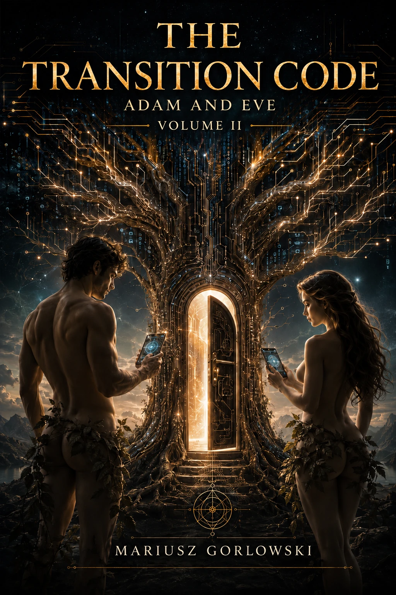

Writing & Books
Unpublished book projects and independent reflections on humanity, artificial intelligence and the future.
AI in a Nutshell
A beginner’s guide to artificial intelligence, with ten prompts you can copy and try.
Open the notebookThe Transition Code
You do not need to be a scientist to be interested in the future. Nor do you have to agree with an author to find their questions worth considering.
In my books, I bring scientific knowledge together with philosophical hypotheses. I make a clear distinction between what we know and what we can only imagine.
I want readers to be able to follow the reasoning without specialist knowledge, ask questions of their own and draw their own conclusions.

The Transition Code
Humanity, Information, and the Birth of a Digital Successor
What if humanity is not the final stage in the development of intelligence?
“It is an original, provocative and endlessly fascinating book that had me thinking about the themes and your arguments after I put the manuscript down for the evening on each of the days I was working on it. To quite a significant extent it successfully presents a grand all-encompassing theory, combining elements of philosophy, biology, physics and psychology.”
We tend to think of artificial intelligence as another technology we have created to make life easier. But what happens if we look at it from a wider perspective?
The Transition Code takes readers through information, DNA, the workings of the brain, evolution and the development of civilisation. By bringing these subjects together, I consider the possibility that humanity is not the end of the story, but one of its stages.
It is a bold hypothesis, not a confirmed discovery or a prediction. That is why the limitations of the ideas, their scientific foundations and the arguments against them matter just as much as the possibilities themselves.
I do not expect readers to accept the vision I put forward. I hope they will finish the book seeing a few familiar things in a different light.
“I think by making AI only one of the tenets you explore you have something that could be a relevant read for years to come”
“I think there will be interest in a fresh, original take on the subject, especially one that tackles fundamental, timeless, universal topics in philosophy.”
“I imagine I will still be thinking of this for a long time to come.”

Adam and Eve · Volume II
What if the future turns out to be more complicated than we expect?
The first volume asks where the development of intelligence might lead. The second turns to the possible consequences of those changes for humanity.
Could people and increasingly advanced AI systems learn to coexist? What possibilities might technology open up? Where does the boundary lie between support and dependence?
And what happens to our freedom of choice if we leave more and more decisions to systems whose workings we do not always understand?
In Adam and Eve, I explore these questions through philosophical scenarios and thought experiments. I do not present them as predictions. I am more interested in the possible consequences of our decisions — and in what we should consider before technology makes certain changes difficult to reverse.
Both volumes remain unpublished. The images are proposed cover designs, not publisher-approved final covers. The status of each book will be updated when there is confirmed news; no publishing agreement is being claimed.